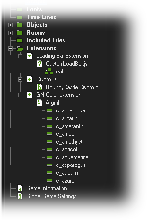
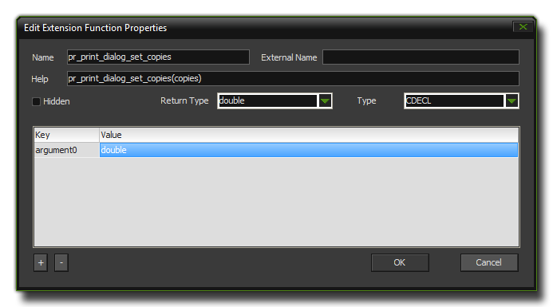
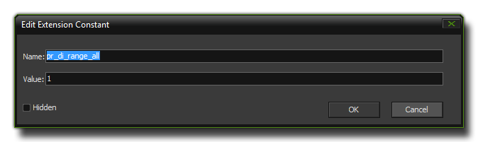

Using An Extension
This section details how to use extensions in GameMaker:Studio.
As you can see from the following screen, GameMaker:Studio can use various types of extension :

The three main types of extension available are those made from the GameMaker Language, JavaScript extensions, and Dynamic-Link librar extensions where GML ones can be used on all target
platforms and *.js ones only on HTML5 and *.dll ones only on Windows. Be aware too, that some gex files that are available on the internet use a combination of all these types and
so you should consult the documentation provided with the extension to see which platforms you can use it with.
The extensions resource tree follows the format of Extension >>> Included File >>> Functions and Constants and before you go any further you should double click on
the included files to bring up the Extension File Properties Dialogue where you can select the target platform for the extension. You can select no targets (the extension will not be used)
or one or more depending on what type of file it is and thew support for it from the available platforms. Please note that this selection can also be linked to change through the use of
Configurations.
Functions
The icon on the left is the Function icon and it shows us that the extension we are using has a function that can be called
using GML from an object or a script in our game. These functions can take arguments, return values and act just like any other GML function, only they use the extension to do the work and not
GameMaker:Studio. You can right-click on a function and select Properties (or simply double click on it) and you will get the function properties window which looks like this :

The Name is the name of the function in GML, and the External Name is the name of the function as the dll sees it. This part cannot be left blank, and must be filled in correctly, even
if the function name is the same as the Name you have supplied previously. Below that is the Help section, where you would put in the correct syntax for the function which will then be
shown in the script and code windows at the bottom of the screen. The Return Type is what the function returns, either a double (number) or a string (text) and if you are using a dll, you will also
get a Type section which defines the calling convention used. Finally you have a list of the arguments that the function takes and whether they are doubles or strings.
Constants
An extension can also contain Constants, which are basically named values you can use rather than having to type the same
text or numbers every time you wish to have a certain value. For example, the GML constant c_blue is a constant for the value $0048ff and is certainly much easier to remember than the hexadecimal
value! if you right-click on a constant and select Properties (or simply double click on it), the following window comes up :

Here you can simply change the name of the constant (be aware that this may affect how the extension works) and the value that it represents.